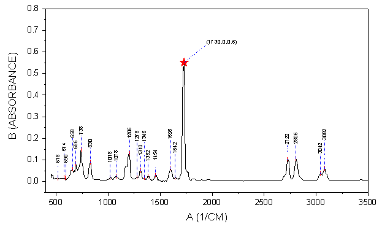
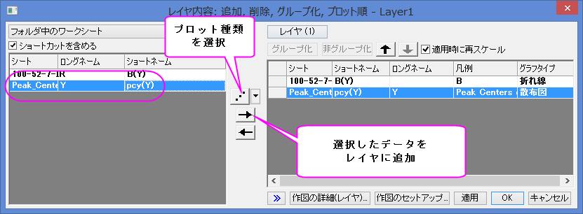
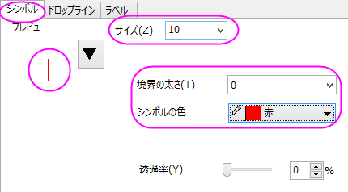
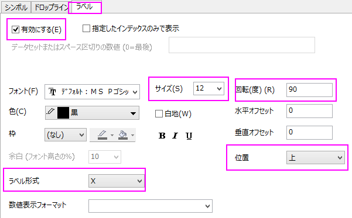
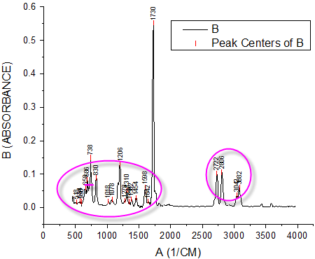
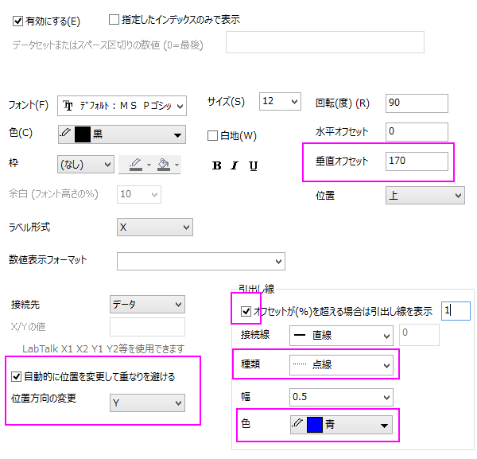
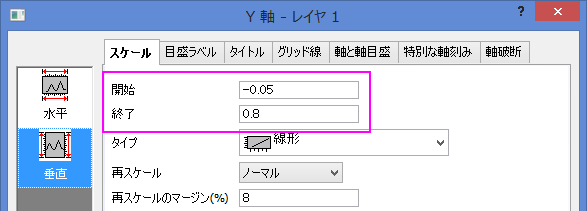
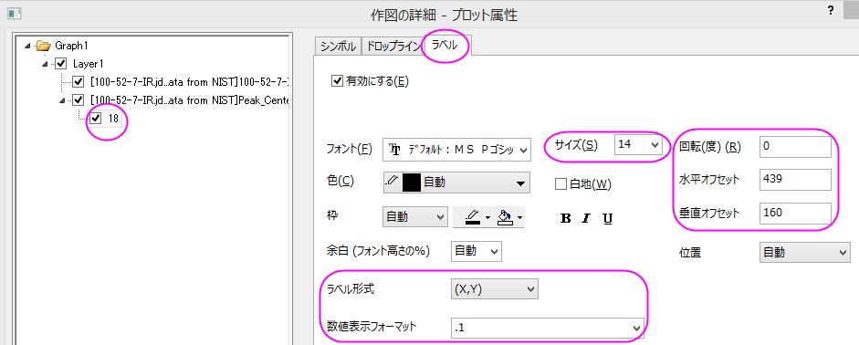
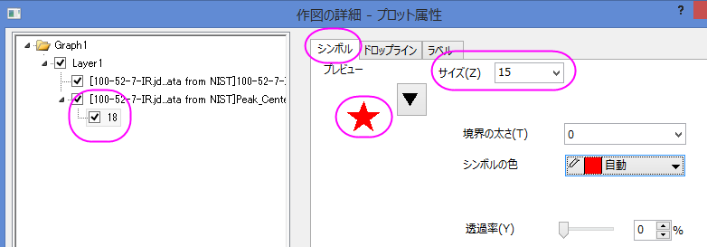
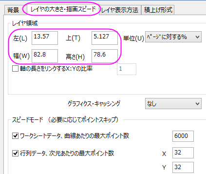

引出し線付きスマートピークラベル
SmartLabels
サマリー
2Dデカルト座標系での線/シンボルプロットの場合、Originは、重複しないように自動再配置可能なスマートラベルをサポートしています。ラベルとデータポイントをつなぐ引出線（直線または斜めの線）を追加することもできます。

必要なOriginのバージョン:Origin 2016 SR0以降
学習する項目
このチュートリアルでは、以下の項目について解説します。
- 引出線付きスマートラベルを追加する
- 特別なデータポイントを追加し、そのラベルを編集する
スマートラベルの追加操作
このチュートリアルは、チュートリアルデータプロジェクト（<Origin EXE フォルダ>\Samples\TutorialData.opj）と関連しています。
- チュートリアルデータを開き、プロジェクトエクスプローラでSmart Peak
Labels with Leader Line フォルダを開きます。
- A100527IR ワークブックには、2つのシートがあります。100-52-7-IR は、IR吸光度データで、Peak_Centers1はOriginのピークアナライザによって検索し、生成された結果シートです。
- 100-52-7-IR シートのB列を選択して、作図：線図：折れ線と選択してグラフを作成します。
- ウィンドウの左上にあるLayer1アイコンをダブルクリックしてレイヤ内容ダイアログボックスを開きます。左パネルで、col(pcy)
を選択します。Aボタンをクリックして作図形式を散布図にしてから、右向き矢印ボタンをクリックして現在のレイヤにデータセットを追加します。
- 
- 作図の詳細ダイアログの左パネルで、2つ目のデータを選択し、シンボルタブで下図のように設定します。
- 
- ラベルタブを開き、有効にするのチェックを付け、下図のようにします。
- 
- 適用ボタンをクリックすると、ラベルが重複していることがわかります。
- 
- ラベルタブの、自動的に位置を変更して重なりを避けるにチェックを付け、修正の方向をY
として、引出線を以下のように設定します。また、垂直オフセットを170にし、引き出し線を明確にします。
- 
- OKボタンをクリックして、ダイアログを閉じます。ラベルが自動的に再配置されます。
単一ポイントとラベルの編集操作
- 一番大きなピークのラベルが見えなくなっています。Y 軸をダブルクリックして軸ダイアログを開きます。スケールタブを開いていることを確認してから垂直アイコンを選択し、開始と終了の値に-0.05と0.8を入力し、OKをクリックして設定を適用します。
- 
- Crtrlキーを押しながら、一番大きなピークラベル1730でダブルクリックし、作図の詳細ダイアログを開きます。左パネルでは、このノードは18と表示されます。これは選択したポイントの行インデックスです。
- ラベルタブを開き、編集を行います。
- 
- シンボルタブを開き、シンボルの形状とサイズを変更します。
- 
グラフの編集
以下の編集操作により、サマリーで表示されている画像のグラフと同じようにグラフを編集します。
- X 軸上でダブルクリックして、軸ダイアログを開き、スケールタブを開いてから開始と終了を400
と3500 に変更します。
- 上の右の枠線を表示するために、軸ダイアログのグリッド線タブを開きます。水平と垂直の両方において、追加の線ブランチにある反対のチェックをつけます。
- レイヤサイズを変更するために、メニューからフォーマット：作図の詳細(レイヤ属性)を選択し、作図の詳細ダイアログボックスを開きます。レイヤの大きさ/描画スピードタブを開き、レイヤ領域グループのレイヤサイズを以下のように変更します。
- 
- 凡例をクリックして選択し、Deleteキーを使用して凡例を削除します。